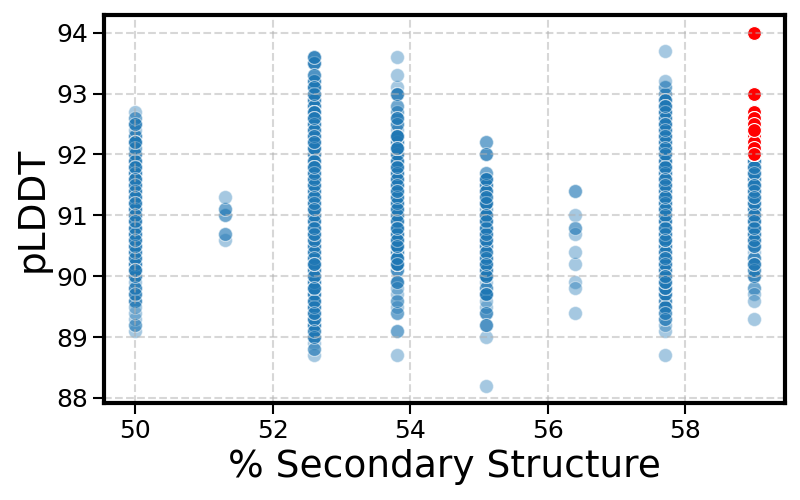
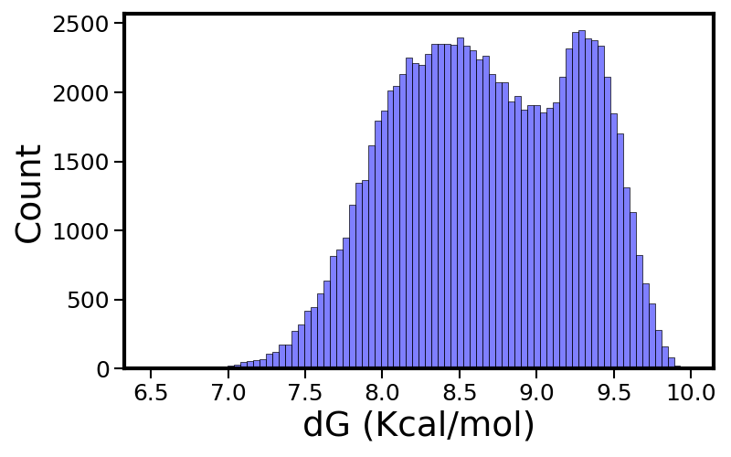
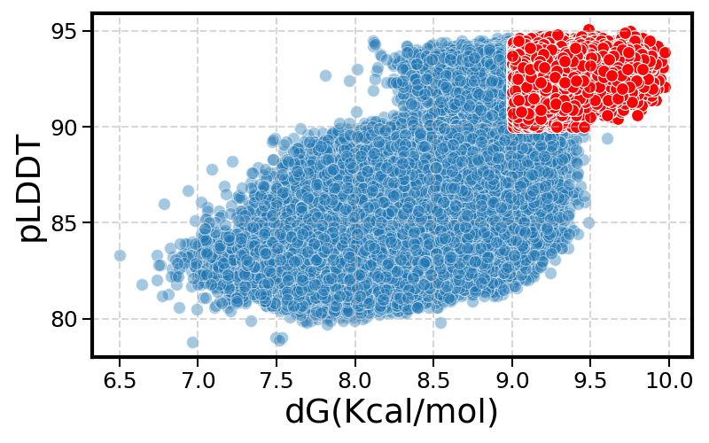

10,000 designs
Validate the approach
- MPNN inverse folding on
SDC_155746_trunc - ESMFold structure prediction → pLDDT & pTM
- Secondary-structure analysis per design
45 designs passed the pLDDT ≥ 92 & ≥58% structured filter
Redesigning the SDC_155746 scaffold with inverse-folding sequence design to install a strong, orthogonal SpyTag/SpyCatcher-compatible binding surface — enabling site-specific, covalent conjugation of the scaffold.
The goal
The SpyCatcher–SpyTag system is one of the strongest, most orthogonal non-covalent protein–protein interactions known — a transglutaminase-based pair that forms a stable isopeptide bond (reported Kd ~ 10⁻¹⁷ M). Presenting one half of this pair on a protein scaffold lets that scaffold be conjugated to a partner of choice in a clean, site-specific way.
The SDC_155746 scaffold (≈78 aa), used as the structural backbone that the new interface is designed around.
Hold the target binding-interface residues fixed on the backbone, then inverse-fold the surrounding sequence to make the design both well-structured and stable.
Every design is scored on fold quality (ESMFold pLDDT/pTM) and stability (ESM3dG ΔG) so candidates that both fold cleanly and are thermodynamically stable advance.
Workflow
Start small to validate the strategy, scale to 100k candidates to find the best designs, then finish the leading candidate.
SDC_155746_truncdesign_fold structure generatedToolbox
A design→predict→score pipeline built on open structure and design models.
Message-passing neural network that designs amino-acid sequences on a fixed backbone (dauparas et al., 2022). Used to generate every candidate in Rounds 1–2.
Structure prediction used throughout the project: it provides the Round-2 target structure and reports per-design pLDDT (local confidence) and pTM (global confidence) as the primary fold-quality metric.
Fold-stability prediction of ΔG (kcal/mol). Run as a 3-checkpoint LoRA ensemble and aggregated to a mean ± std per design for a robust stability score.
Outcomes
Across 110,000 inverse-folded designs, the pipeline consistently separates well-folded, stable candidates from the rest.

Passing candidates (pLDDT ≥ 92, ≥58% structured) highlighted in red.

ΔG (kcal/mol) across all 100,000 designs (mean ≈ 8.7, max 9.97).

Passing candidates (pLDDT ≥ 90, ΔG ≥ 9.0) highlighted in red.
Reproducibility
Each round keeps its design inputs, predicted structures, and analysis outputs, so the full design–predict–select loop can be re-run.
| Round | Stage | Path | Contents |
|---|---|---|---|
| 1 | Sequence design | Round1/Sequence_Design/ |
MPNN designs on SDC_155746_trunc — 10,000 sequences + per-residue scores & recovery |
| 1 | Folding / metrics | Round1/ESM/ |
ESMFold output — structure_metrics.csv (pLDDT, pTM) + predicted structures |
| 1 | Selection | Round1/Analysis/ |
Notebook, selected.txt (45 designs) + figure |
| 2 | Sequence design | Round2/02_Sequence_Design_100K/ |
MPNN designs with 10 fixed interface positions — 100,000 sequences |
| 2 | Folding / stability | Round2/03_ESM_100K/ |
structure_metrics.csv (pLDDT/pTM) + ensemble_fold_stability.csv (ΔG mean/std) |
| 2 | Selection | Round2/Analysis/ |
round2_100K_all.csv (100,000 merged rows) + distribution & scatter figures |
| 3 | Final candidate | Round3/ |
ESMFold run on the leading sequence → design_fold |